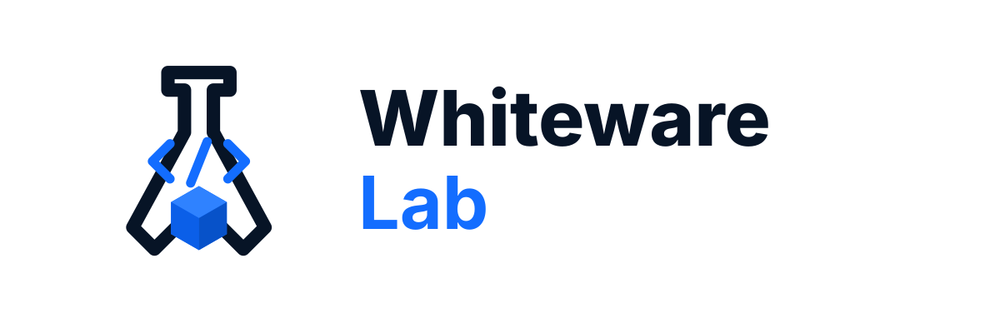

PySide6 App Template
A clean starting point for desktop applications: typed Python, tests, linting, packaging and executable generation.
planned Whiteware Lab
Whiteware Lab
Independent software engineering lab
Whiteware Lab is a small software space for practical tools, Python templates, desktop applications and engineering experiments.

Starting point
The first goal is to build a clean shelf: reusable templates and small apps that can grow without becoming messy.
A clean starting point for desktop applications: typed Python, tests, linting, packaging and executable generation.
plannedA reusable foundation for libraries: src layout, public API discipline, documentation, examples and CI-ready structure.
plannedPractical experiments for personal workflows, engineering tasks, documentation and lightweight productivity.
experimentalWorking style
Prefer boring, understandable solutions over fragile sophistication.
Use cloud services only when they add real value.
Small projects still deserve solid foundations.
The goal is software that solves real problems, not just nice screenshots.
Public repositories will appear as they become stable enough to share.
Follow the GitHub organization